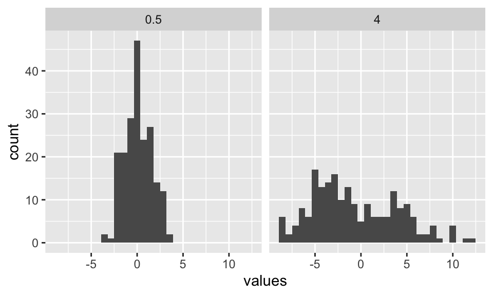
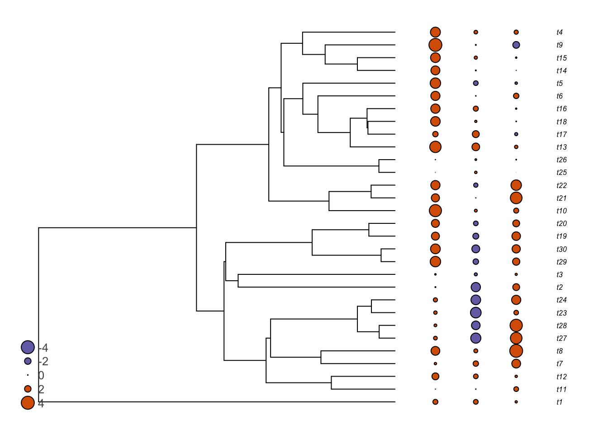

12 Le modèle de Mouvement Brownien (BM)
Lorsque nous souhaitons prendre en compte la non-indépendance des espèces en raison de leurs histoires évolutives dans les analyses statistiques, un modèle d’évolution est nécessairement impliqué. En effet, nous supposons que les caractères ont évolué au fil du temps (le long de la phylogénie) et que les espèces étroitement apparentées sont plus susceptibles d’être en moyenne plus similaires pour un trait donné que des espèces éloignées. En biologie évolutive, le modèle de base (souvent utilisé comme modèle nul dans de nombreuses analyses) est le modèle de mouvement brownien. Ce modèle d’évolution porte le nom de Robert Brown, un botaniste célèbre qui a publié une importante Flora of Australia en 1810. Il fut aussi le premier à distinguer les gymnospermes des angiospermes. Sa découverte du mouvement brownien est due à l’observation que de petites particules en solution ont tendance à se déplacer dans toutes les directions, une observation faite pour la première fois en observant du pollen de Clarkia au microscope. L’explication viendrait plus tard, en termes d’impacts moléculaires aléatoires.
Les mathématiciens ont construit un processus stochastique destiné à approcher le mouvement brownien. Dans ce modèle, chaque étape est indépendante des autres et peut aller dans n’importe quelle direction. Le déplacement moyen est nul et la variance est uniforme dans tout l’espace paramétrique. Les déplacements peuvent être additionnés, ce qui signifie que les variances des déplacements indépendants peuvent s’ajouter. Si \(\sigma^2\) est la variance d’un seul déplacement, la variance après un temps \(t\) sera \(\sigma^2t\). Lorsque le nombre d’étapes est grand, comme dans un contexte phylogénétique, le résultat est distribué normalement.
Lorsqu’il est appliqué aux phylogénies, le modèle de mouvement brownien est en quelque sorte appliqué indépendamment à chaque branche de la phylogénie. Cela permet de modéliser la quantité de changement qui s’est produite le long d’une branche donnée. Si la variance du modèle de mouvement brownien est \(\sigma^2\) par unité de temps \(t\), alors le changement net le long d’une branche de temps \(t\) est tiré d’une distribution normale de moyenne \(0\) et de variance \(\sigma^2t\). Ce modèle peut également être représenté mathématiquement de la manière suivante, où la quantité de changement pour le caractère \(X\) sur le temps infinitésimal dans l’intervalle entre le temps \(t\) et \(t+dt\) est :
\[dX(t)=\sigma^2 dB(t),\]
où \(dB(t)\) est la distribution gaussienne. Il est important de noter que ce modèle suppose que :
- L’évolution se produisant dans chaque branche de la phylogénie est indépendante de celle se produisant dans les autres branches.
- L’évolution est complètement aléatoire (c’est-à-dire sans sélection).
Le paramètre \(\sigma^2\) dans le modèle donne la variance, ou en d’autres termes, la vitesse d’évolution. Plus la variance est élevée, plus le caractère évoluera rapidement. Voici deux exemples de caractères simulés sur un arbre de 200 espèces avec \(\sigma^2=0.5\) et \(\sigma^2=4\).

Une introduction plus approfondie au modèle de Mouvement Brownien se trouve au chapitre 23 du livre de Joe Felsenstein (Felsenstein and Felenstein 2004).
Le modèle de mouvement brownien est souvent dit modéliser la dérive neutre, bien qu’un bon ajustement à ce modèle ne signifie pas nécessairement que les données ont évolué via des dérives aléatoires, car d’autres processus peuvent également donner des motifs similaires à ceux du mouvement brownien (Hansen and Martins 1996).
Notez également que le modèle est stochastique. C’est-à-dire que même si deux espèces étroitement apparentées sont plus susceptibles de partager des états de caractère similaires qu’une espèce éloignée, cela n’est vrai qu’en moyenne. Pour un caractère donné simulé, des espèces étroitement apparentées peuvent parfois être plus différentes qu’une espèce éloignée. Regardez la figure suivante, qui montre trois caractères simulés selon le mouvement brownien.
